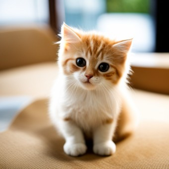

<!DOCTYPE html>
<html></html>
<head>
<title>html</title>
</head>
<body>
<h1><a href="index.html">cat</a></h1>
<ol>
<li><a href="2024.html">history</a></li>
<li><a href="2027.html">face</li>
</ol>
<h2>cat</h2>
고양이는 아주 흔한 동물이다.<strong> 그러나 귀여움이 흔해지지는 않는다 <u> 양이(Felis catus)는 포유류 식육목 고양이과의 동물이다. 고양이의 신체적 특성과 습성은 다른 고양이과 동물들과 동일하여 빠른 반사신경, 탁월한 유연성, 날카로운 이빨, 넣고 꺼낼 수 있는 발톱 등이 있다. 고양이는 매우 긴 수면 시간을 가지고 있어 하루 종일 자는 시간이 굉장히 많으나 기본적으로 야생에서는 포식자 동물이라는 특성 상 박명박모성(薄明薄暮性)으로, 해뜰녘과 해질녘에 주로 행동한다. </u></strong></body>
</html>